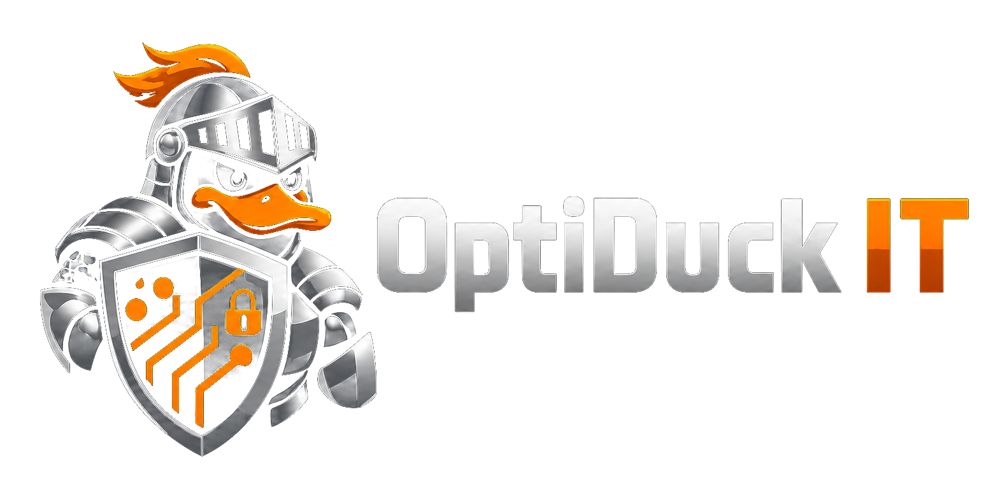

KI-Beratung Münster & Umgebung
OptiDuck IT entwickelt praxisnahe KI-Workflows und Automationen für kleine und mittlere Unternehmen. Verständlich, überschaubar und passend zu Ihrem Arbeitsalltag.
Wo kann KI sinnvoll helfen?
Nicht jeder Prozess braucht KI. Entscheidend ist, wo wiederkehrende Arbeit unnötig Zeit kostet.
Anfragen strukturieren, Antwortentwürfe vorbereiten und Follow-ups organisieren.
Dokumente sortieren, Informationen erfassen und interne Abläufe vereinfachen.
Telefonnotizen strukturieren, Standardtexte vorbereiten und FAQs aufbauen.
Reiseanfragen zusammenfassen und wiederkehrende E-Mails vorbereiten.
Gemeinsam analysieren wir, welche Aufgaben regelmäßig Zeit kosten und wo sich eine Automatisierung wirklich lohnt. Sie erhalten konkrete Ideen, eine Priorisierung und klare nächste Schritte.
„Erst verstehen. Dann vereinfachen. Dann automatisieren.“